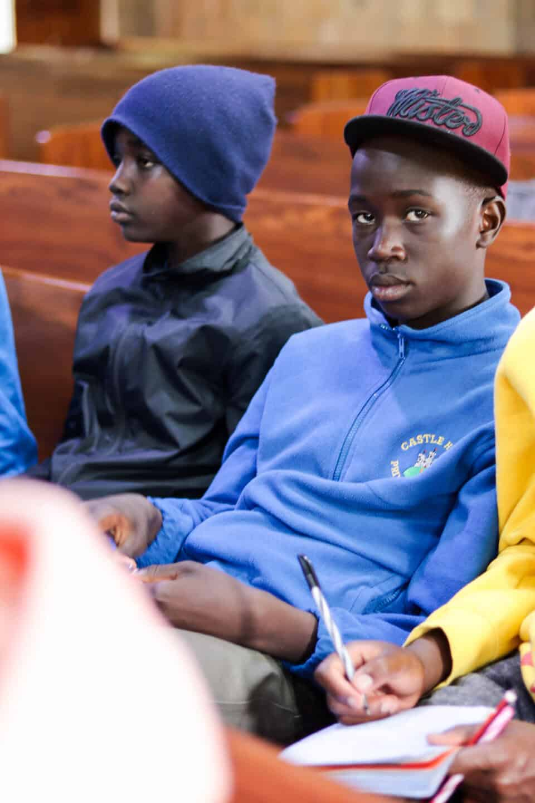

My name is Bramwel. I love football. My dream team is Liverpool.I am an ex-form one and would like to be an engineer

My project
My hobbie is playing football.I started playing football at the age of 5 years. My wish is to play for liverpool one day and become one of the best footballers.
My hobbies
My other hobbie is cycling.I learned cycling at the age of 8 years.Cycling has been so fun.I widh to compete with the best cyclists.
I am a boy who likes to listen more and talk less. I like honest people and dislike selfish and disrespectful people.
My favourite subject
My favourite subjects are Mathematics,Geography and Physics. I love this subjects because they all aentail in my future career.
My subjects
Mathematics
English
Kiswahili
Chenistry
Biology
Geography
History
Physics
CRE
Agriculture
Music
Games in my school
Football
Rugby
basketball
Volleyball
handball
Discription of my school games
Football
Football refers to a variety of team sports that involve kicking a ball to score goals, with the rules and style of play varying depending on the specific type of football being played. The most common types include:
Rugby
Rugby is a contact sport played between two teams, typically with 15 players each (in rugby union) or 13 players (in rugby league), although there are also variations with fewer players (such as rugby sevens, played with 7 players per side). The game is characterized by running with the ball, passing it, and kicking it to score points, while opposing players try to stop the ball carrier and regain possession.
Basketball
Basketball is a fast-paced team sport played between two teams, typically of five players each, with the objective of scoring points by shooting a ball through the opposing team’s hoop or basket. The game is played on a rectangular court, and the team with the most points at the end of the game wins.
Volleyball
Volleyball is a fast-paced team sport played between two teams, usually consisting of six players each, with the goal of scoring points by sending a ball over a net into the opponent's court. The ball is played by hitting it with the hands or arms, and the team that successfully lands the ball in the opponent's side of the court scores a point. The game is played on a rectangular court divided by a net, and each team tries to prevent the opposing team from scoring by blocking or returning the ball.
Handball
Handball is a fast-paced team sport where two teams of seven players (including the goalkeeper) each try to score goals by throwing a small ball into the opponent's net. The game is typically played indoors on a rectangular court, and the team that scores the most goals by the end of the match wins.